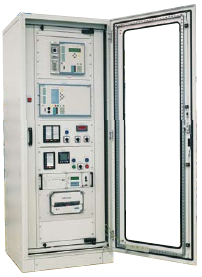

FR protection cabinets
FR protection cabinets offered by ZPAS are indoor structures, designed for installing safeguards, control equipment, signalling equipment and instrumentation as well as control for MV and hV switchrooms.FR protection cabinets are made based on SZE2 enclosures with dimensions 2000 x 800 x 600 or 2000 x 800 x 800 mm.
Depending on customer requirements and equipment provided by the technical design, cabinet construction can be customized to individual needs – both in terms of dimensions and equipment.
A typical configuration of FR cabinets:
- glazed front door,
- symmetrical swing frame and mounting plate or a set of mounting profiles for installing devices behind the swing frame,
- access to equipment on one side or both sides,
- equipment protected by IP 30 masking panels,
- descriptions made as requested and according to standard of the facility which the switchgears are designed for,
- plinth with a height of 100 or 200 mm, solid or perforated.
- Protection of 110 kV, 220 kV, 400 kV lines
- Protection of hV transformers
- Protection of coupler
- Distance
- Differential protection
- Overcurrent protection
- Earth-fault protection
- Section protection
- breaker failure protection
- bus-bar protection
The cabinets are made with single-sided or double-sided access. 